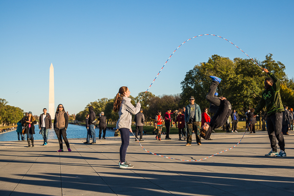

Let’s get something straight from the get-go. This is not a politically charged post. I won’t even mention the election past this sentence. This is solely to point out a few observations made recently while visiting our nation’s capital.
It’s clear that our country is in quite a bit of turmoil, especially over these recent months. But there are a lot of great things going on too. Like for one, the fact that we are able to travel and explore our country and its many subcultures, climates, and worldviews. Maybe I’m biased.
But I’m not the only one that thinks we have a pretty sweet deal in these 50 states. I found evidence in Washington D.C. as we, and hundreds of other visitors, gawked over the eloquent memorials and monuments dedicated to previous leaders. The leaders they honor weren’t perfect. Our current ones aren’t. I’ll bet that future leaders won’t be either. But these beautiful memories of our leaders are still visited by thousands upon thousands of people per year.
Our country is full of respect. It’s full of gratitude. It’s overflowing with people who want to help other people. And there’s no shortage of citizens exercising their rights in order to make our country even better.
I saw peaceful protests. I even saw protestors outside our president’s home. They weren’t sent away. They were seen and listened to, respectfully, by everyone that passed by.

These three kids put on a heck of a show. Using a couple jump-ropes, they took turns jumping, hopping, skipping, and flipping between them. They didn’t even have a tip jar out or ask for money. It was just for fun. And the crowd that gathered around them had plenty of fun too. Unity was created amongst complete strangers. There was even a few minutes of crowd participation where two of the kids would spin the ropes and bystanders could jump in.
On a patch of concrete between Lincoln Memorial and the Reflecting Pool, race, sexuality, and political beliefs fell away. The only things that mattered in that moment were the smiles, the laughs, and the occasional acrobatic stunt between two ropes.
One of the more prevalent lessons I’ve learned this year is how large of an impact media plays in our personal lives as well as in our society. With mini computers in our hands all day, information is constantly flooding our brains. It’s hard to tell what’s real and what’s complete crap. We’re strongly impacted by things that may or may not even be true! We have the power to fact-check and form our own opinions, we just don’t.
We eat what the media feeds us and it’s poisoning our country. It’s easy to only see the tragic things that the media brings to the light and get down on ourselves about it. It takes courage to work to make it better. It even takes courage to be willing to see the good in our current situation, despite these hard times. But it’s essential to growth and to unity. Be courageous. Seek the good.
And maybe take up jump-roping.